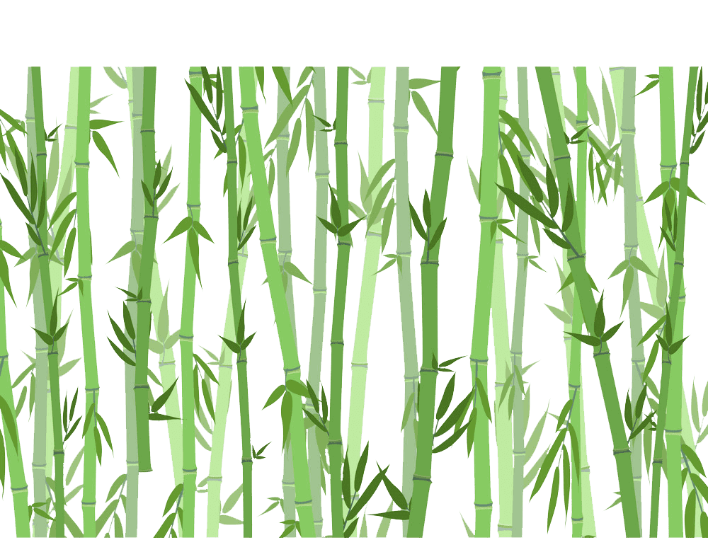
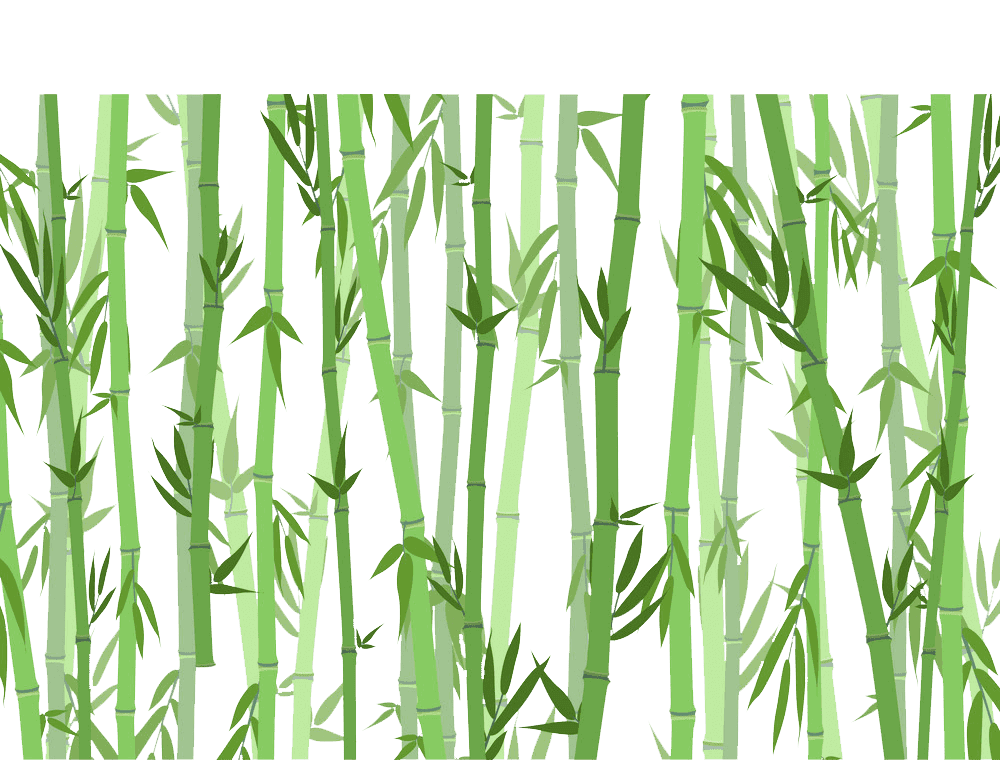
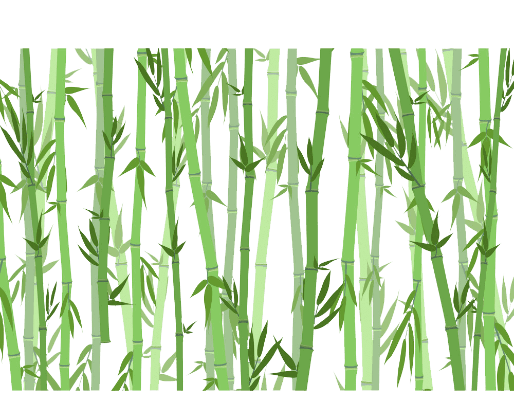
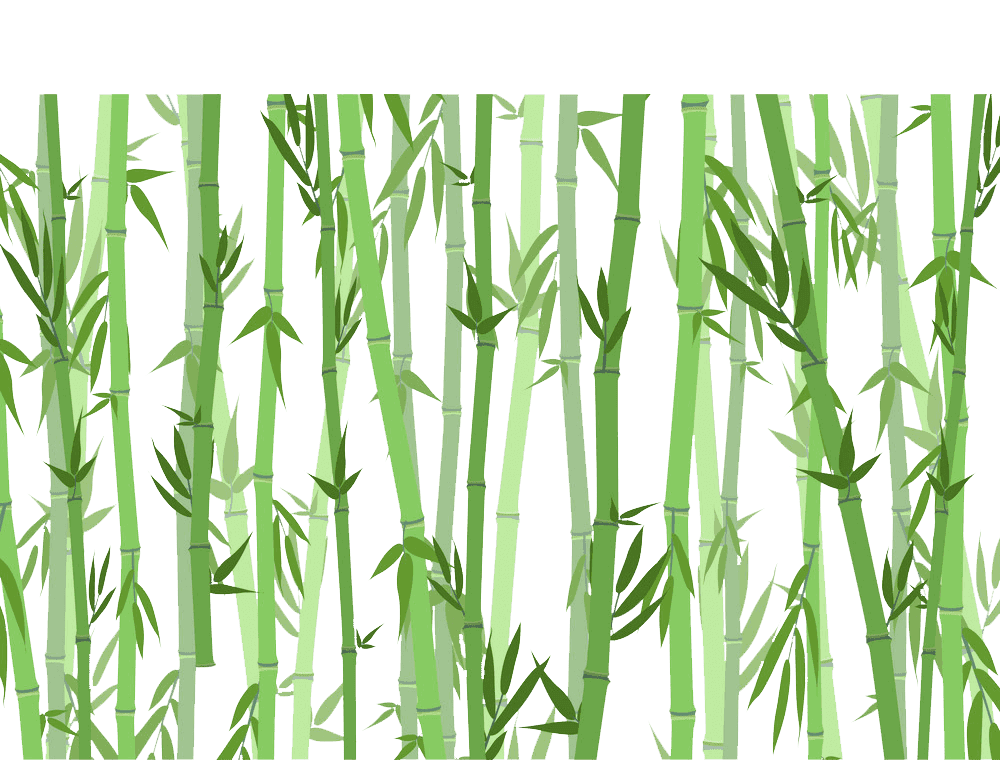

KKN Gel-106
 




Mungkin kita sudah sering mendengar kata kesehatan mental, namun sebenarnya kesehatan mental itu apa? WHO(World Health Organization) mendefinisikan kesehatan mental sebagai keadaan baik dimana seorang individual menyadari kemampuan dirinya serta dapat mengatasi tekanan hidup yang normal sehingga dapat bekerja dengan produktif dan mampu memberikan kontribusi kepada komunitas. Terus apakah kesehatan mental tersebut penting bagi kehidupan kita? CDC (Central of Disease Control) mengatakan bahwa kesehatan mental itu sama aja pentingnya dengan kesehatan fisik, sebagai contoh penyakit mental terutama depresi sudah terbukti dapat meningkatkan resiko penyakit fisik seperti stroke, diabetes tipe 2, dan penyakit jantung serta begitupun juga sebaliknya seringkali penyakit kronis dapat meningkatkan resiko terkena penyakit mental. Setelah mengetahui arti kesehatan mental dan pentingnya dalam hidup kita, yuk kita lihat hal-hal apa saja yang kita dapat lakukan untuk menjaga kesehatan mental
Ternyata tidur sama pentingnya dengan makan, minum, dan bernafas loh! Tidur memungkinkan tubuh kita untuk memperbaiki diri serta otak sehingga memperkuat memori dan pengolahan informasi, dengan demikian membantu kita untuk pulih dari kelelahan mental dan fisik. Tentunya kurang tidur dalam jangka panjang juga memiliki efek seperti meningkatkan resiko terkena penyakit mental maupun fisik. CDC menyarankan untuk tidur setidaknya 7 sampai 9 jam sehari. Jadi teman-teman jangan sering begadang untuk main game yah!
Dr. Lieberman, seorang psikolog di University of California mengatakan bahwa menulis tampaknya membantu otak mengatur emosi secara tidak sengaja. Entah itu menulis sesuatu di buku harian, menulis puisi yang buruk, atau mengarang lirik lagu, tampaknya dapat membantu seseorang secara emosional.
Beberapa penelitian sudah dilakukan untuk mencari tahu efek dari kegiatan-kegiatan yang menenangkan seperti meditasi dan yoga dan ditemukan bahwa kegiatan tersebut dapat meringankan gejala beberapa penyakit mental seperti anxiety (kecemasan) dan depresi, tidak hanya sampai disitu saja, penelitian tersebut juga mengklaim bahwa meditasi dapat menjadi obat untuk mencegah anxiety sehingga sangat disarankan untuk semua orang mencoba meditasi maupun yoga dan tidak terbatas pada orang yang menderita penyakit mental.
Mungkin jika dipikirkan, memang masuk akal bahwa dengan melakukan hobi atau sesuatu yang kita senangi maka suasana hati kita akan semakin membaik, namun apakah kalian tahu ternyata dengan melakukan hobi tersebut dapat membantu menjaga kesehatan mental? Hobi seperti mendengarkan musik, membaca buku, melukis, atau hobi lainnya diasosiasikan dengan berkurangnya gejala penyakit mental dan well-being(keadaan individu dari segi kebahagiaan, stres, kesehatan fisik dan mental, serta kualitas hidup) yang lebih baik. Selain itu hobi yang fisikal seperti seperti olahraga bahkan berkebun dapat mempengaruhi kesehatan mental secara positif melalui mekanisme fisiologis seperti mengurangi tekanan darah, serta mengurangi produksi hormon stres (kortisol).
Ada beberapa keuntungan dari berbuat kebaikan seperti mengurangi stress, meningkatkan emotional well-being, bahkan ada beberapa penelitian yang mengklaim bahwa orang yang sering berbuat kebaikan cenderung hidup lebih lama. Lebih baiknya lagi, berbuat kebaikan terhadap sesama gratis loh! Jadi teman-teman jangan lupa untuk berbuat kebaikan sesering mungkin, dengan berbuat kebaikan kita mungkin saja membuat seseorang yang mengalami hari yang buruk menjadi lebih senang dengan kata lain membantu kesehatan mental orang lain disaat yang bersamaan.
Nah, itulah hal-hal yang dapat dilakukan untuk menjaga
kesehatan mental, dan tak hanya terbatas dengan hal-hal itu saja, sebenarnya masih banyak
hal-hal yang dapat dilakukan untuk membantu/menjaga kesehatan mental sisanya silahkan browsing
sendiri yah, dan jangan lupa untuk selalu mengecek kebenaran informasi jika membaca dari sebuah
blog/website yang bukan milik lembaga resmi.
Salah satu tujuan penulisan blog ini yaitu untuk menyebarkan awareness akan pentingnya
kesehatan mental. Kesehatan mental merupakan bagian yang esensial dalam kehidupan kita, namun
topik ini sangat jarang dibahas sehingga seringkali ada stigma, prejudis, dan diskriminasi bagi
orang yang memiliki penyakit mental. Dan semoga melalui blog ini, orang-orang lebih terdorong
untuk mencari informasi lebih lanjut mengenai kesehatan mental.
Satu pesan untuk pembaca agar selalu ingat untuk berbuat kebaikan terhadap sesama, berbuat
kebaikan itu gratis dan bermanfaat bagi semua yang terlibat :D , apalagi saat ini yang sedang
pandemi dimana banyak orang yang mengalami penurunan kesehatan mental, tindakanmu dapat
mempengaruhi kesehatan mental sesorang.
Stay safe everyone dan jangan lupa untuk mengikuti protokol kesehatan yang
disarankan WHO, dapat dilihat disini (Klik disini)
WHO:Mental
health: strengthening our response
The Guardian:Keeping a diary
makes you happy
Mental Health UK:The
importance of sleep
Mental Health UK:Sleep Matters: The
Impact Of Sleep On Health And Wellbeing
Medical News Today:The close
relationship between sleep and mental health
NCBI:Meditation and Yoga
can Modulate Brain Mechanisms that affect Behavior and Anxiety-A Modern Scientific
Perspective
NCBI:Exploring the
therapeutic effects of yoga and its ability to increase quality of life
medrxiv:Time-use
and mental health during the COVID-19 pandemic: a panel analysis of 55,204 adults
followed across 11 weeks of lockdown in the UK
Mental Health UK:Kindness
Matters Guide
{kind=link}